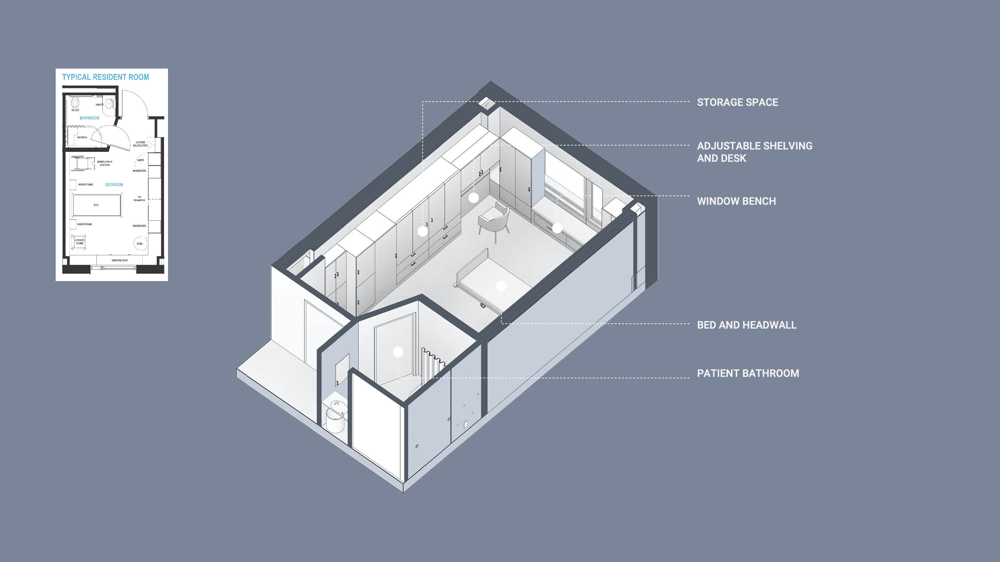

00 Context
Patient Rooms in Long-term Care Environment
Patient rooms are critical spaces for residents, especially in long-term care facilities. The increased desire for a sense of home and privacy, as well as the social well-being of patients, calls for a more customized design solution to the space. Mockups have become an increasingly important element in the design process. Each patient room is a single bedroom with an inbound bathroom. In addition, each room provides ample storage space for personal items and medical supplies.
Strategic planning is essential in ensuring the success of a mock-up. The team carefully considered the objectives and project schedule to decide the level of detail and evaluation methods.
 Our team decided the primary goals of the mock-up were:
- Evaluate the general layout the room
- Evaluate the storage space for staff use and private storage
- Examine the accessibility features of the bedroom and the bathroom
- Assess the bathroom configuration
- Collect feedback on the workflow and user experience of different core groups
- Experiment with design changes by modifying the mock-up
01 Process
Planning and Fabricating the Prototype
During the first meeting with the client, we discussed the overview and history of the neighborhood and came up with the key goals for this project.

02 Evaluate
Collecting Feedback Through Evaluation
We carried out a two-month evaluation process, during which we conducted open house tours, dedicated user group workshop, design meetings and collected feedback via questionnaires and sticky notes. We received 30 survey responses and more than 100 sticker note comments.
Feedback analysis let us change several design features and enabled us to attain variance from the MAAB.

03 Iterate
Analyzing feedback and Re-iterate
We carried out a two-month evaluation process, during which we conducted open house tours, dedicated user group workshop, design meetings and collected feedback via questionnaires and sticky notes. We received 30 survey responses and more than 100 sticker note comments. Feedback analysis let us change several design features and enabled us to attain variance from the MAAB.